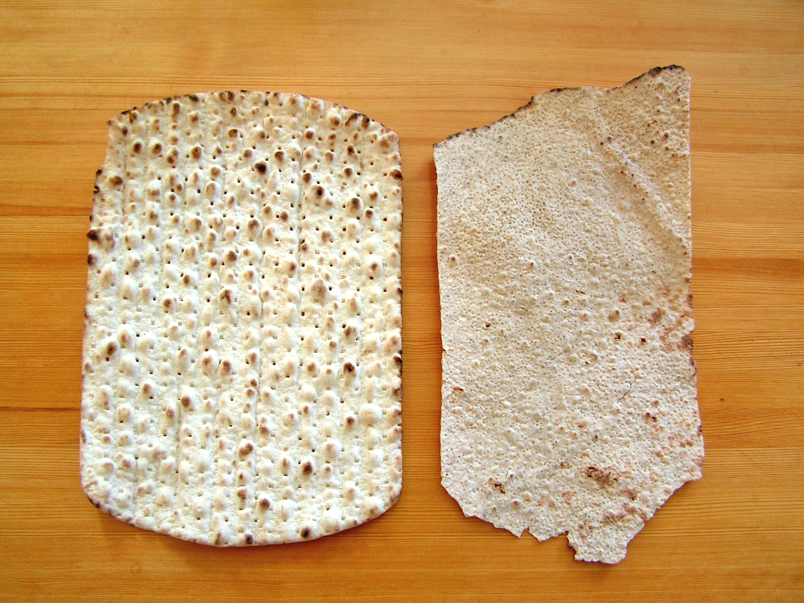

Tunnbröd
Thin enough to write on yet hardy enough for a barbarian!

Tunnbröd, polar bread, flat bread, or any of many other names that it is called is a staple of the Scandanavian diet. It cooks well on hot embers, flat stones or heated sheets of metal and doesn't require any special degree of culinary skill to make. While there are countless varities of it, this rye version of Tunnbröd is a good place to start to learn this ancient art.
Ingredients (Makes ~20)
- 200g wholemeal rye flour
- 300ml warm water
- 2 tbs syrup (or honey)
- 7g dried yeast
- 1tbs fennel
- 5g sea salt
- Mix the flours, yeast and other dry ingredients in a large bowl.
- Pour in the warm water and syrup/honey.
- Ideally with a large spoon, stir the mixture to bring it together in one large lump.
- With wet hands knead the dough thoroughly before covering or placing in a airtight container to rise.
- After the dough has risen, knock it back and take a handful (30g-50g).
- On a lightly floured surface roll or stretch the dough as thin as you can.
- Lightly prick the surface all over with a fork.
- Cook the flat bread on the embers or hot pan (as hot as possible). These should take no more than 20 seconds to cook, Turn the bread using tongs once it starts to bubble and change colour.
- Enjoy on its own or with a topping of your choice!
Back